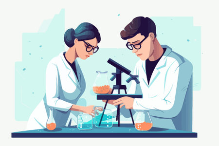

Chi Siamo
DNA nasce dalla volontà dei fondatori, un Dottore in Biologia Molecolare e una Dottoressa in Science and Management of Climate Change, di ridurre la distanza tra la scienza e il pubblico a causa della comunicazione scientifica spesso poco accessibile.
